4. Sample Application – 02: rdvmedecins-jsf2-spring
We will now port the previous application to a Spring/Tomcat environment:
 |
This is truly a port. We will start with the previous application and adapt it to the new environment. We will only comment on the changes. There are three main changes:
- the server is no longer GlassFish but Tomcat, a lightweight server that does not have an EJB container,
- to replace the EJBs, we will use Spring, the main competitor to EJB [http://www.springsource.com/],
- the JPA implementation used will be Hibernate instead of EclipseLink.
Since we will be doing a lot of copy-and-paste between the old and new projects, we will keep the previous projects open in NetBeans:
 |
Using the Spring framework requires certain knowledge, which can be found in [ref7] (see page 166).
4.1. The [DAO] and [JPA] layers
 |
4.1.1. The NetBeans project
We are building a Maven project of the [Java Application] type:
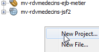 | 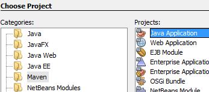 | 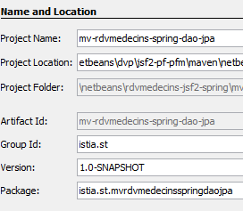 |
 |
- in [1], the created project,
- in [2], the same project with the [Source Packages] and [Test Packages] removed, along with the [junit-3.8.1] dependency.
The hardest part of Maven projects is finding the right dependencies. For this Spring / JPA / Hibernate project, they are as follows:
<project xmlns="http://maven.apache.org/POM/4.0.0" xmlns:xsi="http://www.w3.org/2001/XMLSchema-instance"
xsi:schemaLocation="http://maven.apache.org/POM/4.0.0 http://maven.apache.org/xsd/maven-4.0.0.xsd">
<modelVersion>4.0.0</modelVersion>
<groupId>istia.st</groupId>
<artifactId>mv-rdvmedecins-spring-dao-jpa</artifactId>
<version>1.0-SNAPSHOT</version>
<packaging>jar</packaging>
<name>mv-rdvmedecins-spring-dao-jpa</name>
<url>http://maven.apache.org</url>
<properties>
<project.build.sourceEncoding>UTF-8</project.build.sourceEncoding>
</properties>
<dependencies>
<dependency>
<groupId>org.hibernate</groupId>
<artifactId>hibernate-entitymanager</artifactId>
<version>4.1.2</version>
<type>jar</type>
</dependency>
<dependency>
<groupId>org.hibernate.java-persistence</groupId>
<artifactId>jpa-api</artifactId>
<version>2.0.Beta-20090815</version>
<type>jar</type>
</dependency>
<dependency>
<groupId>mysql</groupId>
<artifactId>mysql-connector-java</artifactId>
<version>5.1.6</version>
</dependency>
<dependency>
<groupId>junit</groupId>
<artifactId>junit</artifactId>
<version>4.10</version>
<scope>test</scope>
<type>jar</type>
</dependency>
<dependency>
<groupId>commons-dbcp</groupId>
<artifactId>commons-dbcp</artifactId>
<version>1.2.2</version>
</dependency>
<dependency>
<groupId>commons-pool</groupId>
<artifactId>commons-pool</artifactId>
<version>1.6</version>
</dependency>
<dependency>
<groupId>org.springframework</groupId>
<artifactId>spring-tx</artifactId>
<version>3.1.1.RELEASE</version>
<type>jar</type>
</dependency>
<dependency>
<groupId>org.springframework</groupId>
<artifactId>spring-beans</artifactId>
<version>3.1.1.RELEASE</version>
<type>jar</type>
</dependency>
<dependency>
<groupId>org.springframework</groupId>
<artifactId>spring-context</artifactId>
<version>3.1.1.RELEASE</version>
<type>jar</type>
</dependency>
<dependency>
<groupId>org.springframework</groupId>
<artifactId>spring-orm</artifactId>
<version>3.1.1.RELEASE</version>
<type>jar</type>
</dependency>
</dependencies>
</project>
- lines 18–29: for Hibernate,
- lines 30–34: for the MySQL JDBC driver,
- lines 35–41: for the JUnit test,
- lines 42–51: for the Apache Commons DBCP connection pool. A connection pool is a pool of open connections. When the application needs a connection, it requests one from the pool. When it no longer needs it, it returns it. Connections are opened when the application starts and remain open for the duration of the application’s lifetime. This avoids the overhead of repeatedly opening and closing connections. This type of pool existed in GlassFish, but its use was transparent to us. This will also be the case here, but we need to install and configure it,
- lines 52–75: for Spring.
Let’s add these dependencies and build the project:
 |
- in [1], we build the project, which will force Maven to download the dependencies;
- in [2], these then appear in the [Dependencies] branch. There are a great many of them, as the Hibernate and Spring frameworks themselves have numerous dependencies. Again, thanks to Maven, we don’t have to worry about these. They are downloaded automatically.
Now that we have the dependencies, we paste the EJB project code from the [dao] layer into the Spring project in the [dao] layer:
 |
- in [1], we copy to the source project,
- in [2], we paste into the destination project,
- in [3], the result.
Once the copy is complete, you need to fix the errors.
4.1.2. The [exceptions] package
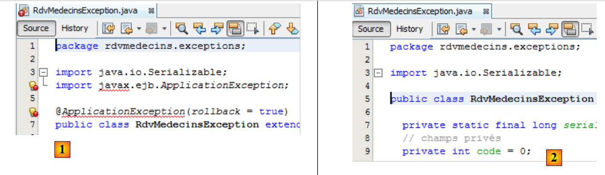 |
The [RdvMedecinsExceptions] class [1] has errors because the [javax] package on line 4 no longer exists. This is an EJB-specific package. The error on line 6 stems from the one on line 4. We delete these two lines. This resolves the errors [2].
4.1.3. The [jpa] package
 |
- In [1], the [Creneau] class is incorrect due to the absence of the validation package on line [5]. We could have added this package to the project dependencies. However, during testing, Hibernate throws an exception because of it. Since it is not essential to our application, we removed it. To fix the class, simply delete all the incorrect lines [2]. We do this for all the incorrect classes.
4.1.4. The [dao] package
We are now at the following point:
 |
- in [1], the two corrected packages,
- in [2], the [dao] package. Since there are no longer any EJBs, the concepts of EJB remote and local interfaces no longer apply. We remove them [3].
 |
- In [1], the errors in the [DaoJpa] class have two causes:
- the import of a package related to EJBs (lines 6–8);
- the use of the local and remote interfaces that we just removed.
We remove the erroneous lines and use the [IDao] interface instead of the local and remote interfaces [2].
 |
In the EJB project, the [DaoJpa] class was a singleton, and its methods ran within a transaction. We will see that the [DaoJpa] class will be a bean managed by Spring. By default, every Spring bean is a singleton. That covers the first property. The second is achieved using Spring’s @Transactional annotation [3]:
 |
With this done, the project no longer has any errors [4].
4.1.5. Configuring the [JPA] layer
In the EJB project, we configured the [JPA] layer using the [persistence.xml] file. Here we have a [JPA] layer, so we need to create this file. In the EJB project, we generated it using GlassFish. Here, we’re building it manually. The main reason for this is that part of the configuration from the [persistence.xml] file is migrated into the Spring configuration file itself.
We create the [persistence.xml] file:
 |
with the following content:
<?xml version="1.0" encoding="UTF-8"?>
<persistence version="2.0" xmlns="http://java.sun.com/xml/ns/persistence" xmlns:xsi="http://www.w3.org/2001/XMLSchema-instance" xsi:schemaLocation="http://java.sun.com/xml/ns/persistence http://java.sun.com/xml/ns/persistence/persistence_2_0.xsd">
<persistence-unit name="spring-dao-jpa-hibernate-mysqlPU" transaction-type="RESOURCE_LOCAL">
<class>rdvmedecins.jpa.Client</class>
<class>rdvmedecins.jpa.TimeSlot</class>
<class>rdvmedecins.jpa.Doctor</class>
<class>rdvmedecins.jpa.Rv</class>
</persistence-unit>
</persistence>
- Line 3: We give the persistence unit a name,
- line 3: the transaction type is RESOURCE_LOCAL. In the EJB project, it was JTA to indicate that transactions were managed by the EJB container. The value RESOURCE_LOCAL indicates that the application manages its own transactions. This will be the case here through Spring,
- lines 4–7: the full names of the four JPA entities. This is optional because Hibernate automatically searches for them in the project’s ClassPath.
That’s it. The name of the JPA provider, its properties, and the JDBC characteristics of the data source are now in the Spring configuration file.
4.1.6. The Spring configuration file
We mentioned that the [DaoJpa] class is a bean managed by Spring. This is done via a configuration file. This file will also contain the database access configuration as well as transaction management. It must be in the project’s ClassPath. We place it in the [Other sources] folder:
 |
The [spring-config-dao.xml] file is as follows:
<?xml version="1.0" encoding="UTF-8"?>
<beans xmlns="http://www.springframework.org/schema/beans" xmlns:xsi="http://www.w3.org/2001/XMLSchema-instance"
xmlns:tx="http://www.springframework.org/schema/tx"
xsi:schemaLocation="http://www.springframework.org/schema/beans http://www.springframework.org/schema/beans/spring-beans-2.0.xsd http://www.springframework.org/schema/tx http://www.springframework.org/schema/tx/spring-tx-2.0.xsd">
<!-- application layers -->
<bean id="dao" class=" " />
<!-- EntityManagerFactory -->
<bean id="entityManagerFactory" class="org.springframework.orm.jpa.LocalContainerEntityManagerFactoryBean">
<property name="dataSource" ref="dataSource" />
<property name="jpaVendorAdapter">
<bean class="org.springframework.orm.jpa.vendor.HibernateJpaVendorAdapter">
<property name="databasePlatform" value="org.hibernate.dialect.MySQL5InnoDBDialect" />
<!--
<property name="showSql" value="true" />
<property name="generateDdl" value="true" />
-->
</bean>
</property>
</bean>
<!-- the DBCP data source -->
<bean id="dataSource" class="org.apache.commons.dbcp.BasicDataSource" destroy-method="close">
<property name="driverClassName" value="com.mysql.jdbc.Driver" />
<property name="url" value="jdbc:mysql://localhost:3306/dbrdvmedecins2" />
<property name="username" value="root" />
<property name="password" value="" />
</bean>
<!-- the transaction manager -->
<tx:annotation-driven transaction-manager="txManager" />
<bean id="txManager" class="org.springframework.orm.jpa.JpaTransactionManager">
<property name="entityManagerFactory" ref="entityManagerFactory" />
</bean>
<!-- exception translation -->
<bean class="org.springframework.dao.annotation.PersistenceExceptionTranslationPostProcessor" />
<!-- persistence -->
<bean class="org.springframework.orm.jpa.support.PersistenceAnnotationBeanPostProcessor" />
</beans>
This is a Spring 2.x-compatible file. We have not attempted to use the new features of the 3.x versions.
- Lines 2–4: the root <beans> tag of the configuration file. We will not comment on the various attributes of this tag. Be sure to copy and paste carefully, as a mistake in any of these attributes can cause errors that are sometimes difficult to understand.
- line 7: the "dao" bean is a reference to an instance of the [rdvmedecins.dao.DaoJpa] class. A single instance will be created (singleton) and will implement the [dao] layer of the application,
- Lines 24–29: A data source is defined. It provides the "connection pool" service we mentioned earlier. The [DBCP] from the Apache Commons DBCP project [http://jakarta.apache.org/commons/dbcp/] is used here,
- lines 25–28: to establish connections with the target database, the data source needs to know the JDBC driver being used (line 25), the database URL (line 26), the connection username, and its password (lines 27–28),
- lines 10–21: configure the JPA layer,
- line 10: defines an [EntityManagerFactory] bean capable of creating [EntityManager] objects to manage persistence contexts. The instantiated class [LocalContainerEntityManagerFactoryBean] is provided by Spring. It requires a number of parameters to instantiate itself, defined in lines 11–20,
- line 11: the data source to use for obtaining connections to the DBMS. This is the [DBCP] source defined in lines 24–29,
- lines 12–20: the JPA implementation to use,
- line 13: defines Hibernate as the JPA implementation to use,
- line 14: the SQL dialect that Hibernate must use with the target DBMS, here MySQL5,
- line 16 (commented out): requests that SQL statements executed by Hibernate be logged to the console,
- line 17 (commented out): requests that the database be generated (drop and create) when the application starts,
- line 32: specifies that transactions are managed using Java annotations (they could also have been declared in spring-config.xml). Specifically, this is the @Transactional annotation found in the [DaoJpa] class,
- lines 33–35: define the transaction manager to be used,
- line 33: the transaction manager is a class provided by Spring,
- line 34: Spring’s transaction manager needs to know the EntityManagerFactory that manages the JPA layer. This is the one defined on lines 10–21,
- line 41: defines the class that manages Spring persistence annotations,
- Line 38: defines the Spring class that handles, among other things, the @Repository annotation, which makes a class annotated in this way eligible for the translation of native JDBC driver exceptions from the DBMS into generic Spring exceptions of type [DataAccessException]. This translation encapsulates the native JDBC exception in a [DataAccessException] type that has various subclasses:

This translation allows the client program to handle exceptions generically regardless of the target DBMS. We did not use the @Repository annotation in our Java code. Therefore, line 38 is unnecessary. We left it in for informational purposes only.
We are done with the Spring configuration file. It was taken from the Spring documentation. Adapting it to various situations often boils down to two modifications:
- the target database: lines 24–29,
- the JPA implementation: lines 12–20.
When the code runs, all beans in the configuration file will be instantiated. We’ll see how.
4.1.7. The JUnit test class
 |
We tested the [DAO] layer of the EJB project with a JUnit test. We’ll do the same for the [DAO] layer of the Spring project:
- in [1] and [2], copying and pasting the JUnit test between the two projects,
- in [3], the imported test shows errors in its new environment.
 |
The error reported in [1] is that the EJB’s remote interface no longer exists. Furthermore, the initialization code for the [dao] field on line 19 was an EJB-specific JNDI call (lines 25–28). To instantiate the [dao] field on line 19, we need to use the Spring configuration file. This is done as follows:
 |
- line 21: the interface type has become [IDao],
- line 28: instantiates all beans declared in the [spring-config-dao.xml] file, specifically this one:
<bean id="dao" class="rdvmedecins.dao.DaoJpa" />
- Line 29 requests a reference to the bean with id="dao" from the Spring context on line 28. We then obtain a reference to the [DaoJpa] singleton (class above) that Spring has instantiated.
Lines 28–29 construct the following blocks (pink dotted lines):
 |
When the JUnit client tests run, the [DAO] layer has been instantiated. We can therefore test its methods. Note that no server is required to run this test, unlike the EJB [DAO] test, which required the Glassfish server. Here, everything runs within the same JVM.
We can now run the JUnit test. The MySQL server must be running. The results are as follows:
 |
The JUnit test passed. Let’s examine the test logs as we did during the EJB test:
- lines 1-4: Spring logs,
- lines 5-10: Hibernate logs,
- line 11: Spring reports all the beans it has instantiated. First, we see the [dao] bean,
- lines 12 and following: JUnit test logs,
- lines 60–65: we clearly see the exception caused by adding an appointment that already exists in the database. Recall that with EJB, we did not encounter this exception due to a serialization issue.
The [dao] layer is operational. We will now build the [business] layer.
4.2. The [business] layer
 |
We proceed in the same way as for the [DAO] layer, by copying and pasting from the EJB project to the Spring project.
4.2.1. The NetBeans project
We are building a new Maven project of type [Java Application], stripped of everything we do not want to keep [1]:
 |
4.2.2. Project dependencies
In the architecture:
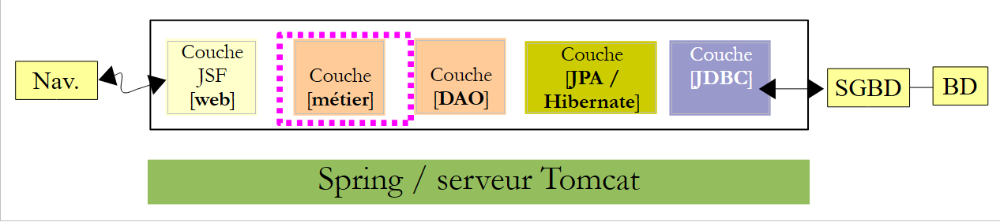 |
the [business] layer relies on the [DAO] layer. We therefore add a dependency on the previous project:
 |
- In [1] and [2], we add a dependency on the [DAO] layer project;
- in [3], this dependency has introduced other dependencies, those of the [DAO] layer project.
 |
- In [1] and [2], we copy the Java sources from the EJB project to the Spring project,
- in [3], the imported sources contain errors in their new environment.
We start by removing the remote and local interfaces from the [business] layer that no longer exist [4]:
 |
- In [5], the errors in the [Business] class have several causes:
- the use of the [javax.ejb] package, which no longer exists;
- the use of the [IDaoLocal] interface, which no longer exists;
- the use of the [IMetierRemote] and [IMetierLocal] interfaces, which no longer exist.
We
- delete all erroneous lines related to the [javax.ejb] package,
- replace the [IDaoLocal] interface with the [IDao] interface,
- replace the [IMetierRemote] and [IMetierLocal] interfaces with the [IMetier] interface.
 |
- In [6], with the class corrected as described,
- in [7], there are no more errors.
We have removed the references to the EJBs, but now we need to retrieve their properties:
 |
- line 22: we had a singleton. This behavior will be achieved by making the class a Spring-managed bean,
- line 23: each method ran within a transaction. This will be achieved using the Spring @Transactional annotation,
- lines 27–28: the reference to the [DAO] layer was obtained via EJB container injection. We will use Spring injection.
The code for the [Metier] class in the Spring project therefore evolves as follows:
 |
That’s all for the Java code. The rest takes place in the Spring configuration file.
4.2.3. The Spring configuration file
We copy the Spring configuration file from the [DAO] layer project into the [Business] layer project. We start by creating the [Other Resources] branch in the [Business] layer project if it does not exist:
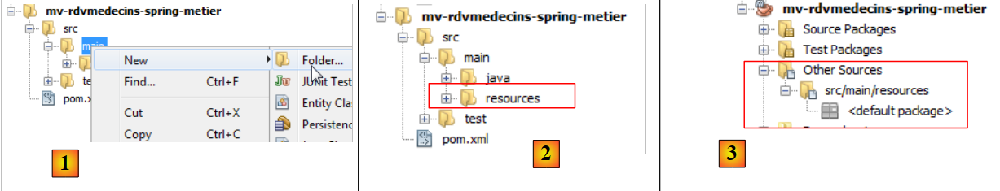 |
- In [1], in the [Files] tab, create a subfolder under the [main] folder,
- in [2], it should be named [resources],
- in [3], in the [Projects] tab, the [Other Sources] branch has been created.
We can now copy and paste the Spring configuration file:
 |
- in [1], copy the file from the [DAO] project into the [business] project [2],
- in [3], the copied file.
The configuration file that was copied configures the [DAO] layer. We add a bean to it to configure the [business] layer:
- line 2: the [DAO] layer bean,
- lines 3–5: the [business] layer bean,
- line 3: the bean is named métier (id attribute) and is an instance of the [rdvmedecins.metier.service.Metier] class (class attribute). This bean will be instantiated like the others when the application starts.
Let’s review the code for the [rdvmedecins.metier.service.Metier] bean:
package rdvmedecins.metier.service;
...
public class Metier implements IMetier, Serializable {
// DAO layer
private IDao dao;
public Metier() {
}
- Line 8: The [dao] field will be instantiated by Spring at the same time as the business bean. Let’s go back to the definition of this bean in the Spring configuration file:
- Line 4: The <property> tag is used to initialize fields of the instantiated bean. The field name is specified by the name attribute. Therefore, the dao field of the [rdvmedecins.metier.service.Metier] class will be instantiated. This is done via a setDao method, which must exist. The value assigned to it is that of the ref attribute. Here, this value is the reference to the dao bean from line 2.
Put more simply, in the code:
package rdvmedecins.metier.service;
...
public class Metier implements IMetier, Serializable {
// DAO layer
private IDao dao;
public Metier() {
}
The dao field on line 19 will be initialized by Spring with a reference to the [dao] layer. This is what we wanted. The dao field will be initialized by Spring via a setter that we need to add:
// setter
public void setDao(IDao dao) {
this.dao = dao;
}
We rename the Spring configuration file to reflect the changes:
 |
We are now ready to run a test. We’ll use the console test used to test the [Business] EJB.
4.2.4. Testing the [business] layer
The test will run with the following architecture:
 |
We copy the console test from the EJB project into the Spring project:
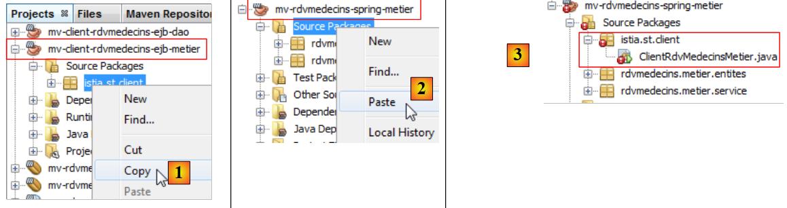 |
- In [1] and [2], copy and paste between the two projects;
- in [3], the imported code contains errors.
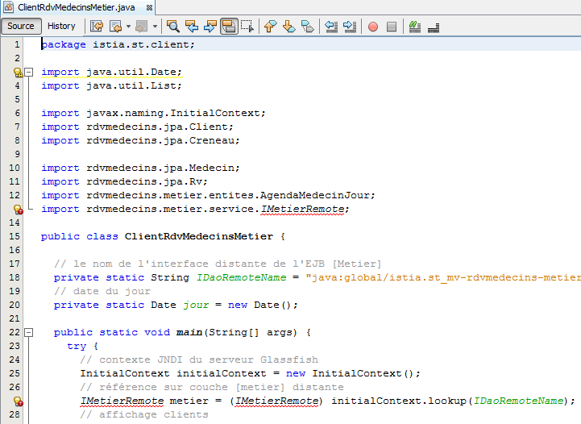 |
The imported code contains two types of errors:
- line 13: the [IMetierRemote] interface has been replaced by the [IMetier] interface,
- lines 24–27: the [business] layer is no longer instantiated via a JNDI call but by instantiating the beans from the Spring configuration file.
We correct these two issues:
 |
- line 22: the [spring-config-metier-dao.xml] file is used. All beans in this file are then instantiated. Among them are the following:
<!-- application layers -->
<bean id="dao" class="rdvmedecins.dao.DaoJpa" />
<bean id="business" class="rdvmedecins.business.service.Business">
<property name="dao" ref="dao"/>
</bean>
These two beans represent the [DAO] and [business] layers of the test architecture:
 |
Once this is done, the test can run:
 |
The test logs are as follows:
- Lines 1–4: Spring and Hibernate logs,
- line 5: beans instantiated by Spring. Note the DAO and business beans,
- lines 6–53: the test logs. They match the results obtained from the EJB project test. We refer the reader to the comments on that test (section 3.5.3).
We have built the [business] layer. We now move on to the final layer, the [web] layer.
4.3. The [web] layer
 |
To build the [web] layer, we will proceed in the same way as for the other two layers, by copying and pasting from the [web] layer of the EJB project.
4.3.1. The NetBeans project
First, we create a web project:
 |
- in [1], create a new project,
- in [2], a Maven project of type [Web Application],
- in [3], we give it a name,
 |
- in [4], this time we choose the Tomcat server instead of GlassFish, which was used for the EJB project,
- in [5], the resulting project,
- in [6], the project after removing [index.jsp] and the [Source Packages] package.
4.3.2. Project dependencies
Let’s look at the project architecture:
 |
The [web] layer depends on the [business] [DAO] [JPA] layers. These are part of the two projects we just built. Hence, a dependency on each of these projects:
 |
- in [1], we add the dependency on the Spring / business project,
- in [2], the Spring / business project has been added. Since it itself had a dependency on the Spring / DAO / JPA project, that one was automatically added to the dependencies [3].
Let’s return to the structure of our application:
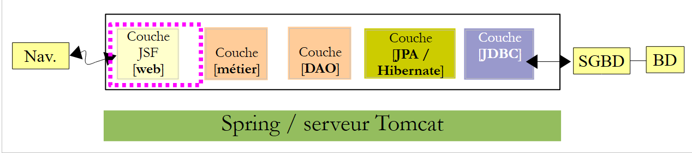 |
The web layer is a JSF layer. We therefore need the Java Server Faces libraries. The Tomcat server does not have them. The dependency will therefore not have a [provided] scope, as it did with the Glassfish server, but a [compile] scope, which is the default scope when no scope is specified.
We add these dependencies directly in the [pom.xml] file:
<dependencies>
<dependency>
<groupId>${project.groupId}</groupId>
<artifactId>mv-rdvmedecins-spring-metier</artifactId>
<version>${project.version}</version>
</dependency>
<dependency>
<groupId>com.sun.faces</groupId>
<artifactId>jsf-api</artifactId>
<version>2.1.7</version>
</dependency>
<dependency>
<groupId>com.sun.faces</groupId>
<artifactId>jsf-impl</artifactId>
<version>2.1.7</version>
</dependency>
<dependency>
<groupId>javax</groupId>
<artifactId>javaee-web-api</artifactId>
<version>6.0</version>
<scope>provided</scope>
</dependency>
</dependencies>
- Lines 7–16 have been added to the [pom.xml] file. These are the dependencies for JSF. They are the ones used in the EJB/GlassFish project. Note that they do not have the <scope> tag. Therefore, they have the [compile] scope by default. The JSF library will thus be embedded in the web project’s [war] archive.
After adding these dependencies to the [pom.xml] file, we compile the project so that they are downloaded.
4.3.3. Porting the JSF/Glassfish project to the JSF/Tomcat project
We copy all the code from the JSF/Glassfish project to the JSF/Tomcat project:
 |
- [1, 2, 3]: copy the web pages from the old project to the new one,
 |
- [1, 2, 3]: copy the Java code from the old project to the new one. There are errors. This is normal. We will fix them,
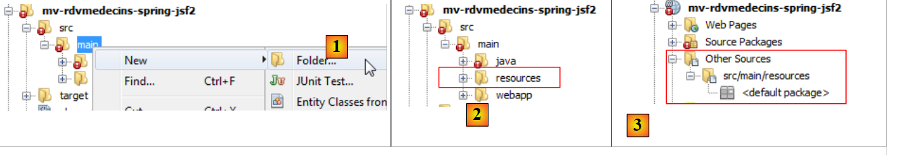 |
- in [1], in the [Files] tab of NetBeans, create a [resources] subfolder within the [main] folder,
- this creates the [Other Sources] branch in the [Projects] tab [3],
 |
- [1, 2, 3]: Copy the message files from the old project to the new project.
4.3.4. Modifications to the imported project
We noted that the imported Java code contained errors. Let’s examine them:
 |
- In [1], only the [Application] bean is incorrect;
- in [2], the error is due solely to the [IMetierLocal] interface, which no longer exists. Here, it may be surprising that line 20 is not flagged as an error. The @EJB annotation explicitly refers to EJBs and is recognized here. This is due to the presence of the [javaee-web-api-6.0] dependency [3]. Java EE 6 introduced an architecture that allows deploying a web application based on EJBs without a remote interface on servers that do not have an EJB container. The server simply needs to provide the [javaee-web-api-6.0] dependency. We can see that this dependency has the [provided] scope [3].
Here, we will not use the [javaee-web-api-6.0] dependency. We remove it [1]:
 |
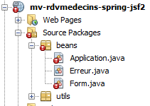 |
This causes new errors [2]. Let's start with the ones in the [Form] bean:
 |
- In [1], the erroneous lines are related to the loss of the [javax] package. We remove them all [2]. The erroneous lines made the [Form] class a session-scoped bean (lines 18–20 of [1]). Additionally, the [Application] bean was injected on line 25. This information will be moved to the JSF configuration file [faces-config.xml].
Let’s move on to the [Application] bean:
 |
We remove all the erroneous lines from [1] and change the [IMetierLocal] interface in lines 13 and 21 to [IMetier]. In [2], there are no more errors. In [1], we removed lines 15–16, which made the [Application] class an application-scoped bean. This information will be moved to the JSF configuration file [faces-config.xml]. We have also removed line 20, which injected a reference from the [business] layer into the bean. Now, this will be initialized by Spring. We already have the necessary configuration file; it is the one from the Spring / Business project. We copy it:
 |
- in [1, 2], we copy the Spring configuration file from the Spring / Business project to the Spring / JSF project,
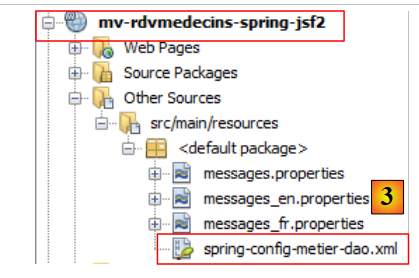 |
In [3], the result.
In the [Application] bean, we need to use this configuration file to obtain a reference to the [business] layer. This is done in its [init] method:
package beans;
...
import org.springframework.context.ApplicationContext;
import org.springframework.context.support.ClassPathXmlApplicationContext;
public class Application {
// business layer
private IBusinessModel businessModel;
...
public Application() {
}
@PostConstruct
public void init() {
try {
// instantiate the [business] layer
ApplicationContext ctx = new ClassPathXmlApplicationContext("spring-config-business-dao.xml");
business = (IMetier) ctx.getBean("business");
// cache doctors and clients
...
} catch (Throwable th) {
...
}
...
}
- line 20: the beans from the Spring configuration file are instantiated,
- line 21: a reference is requested for the business bean, i.e., in the [business] layer.
Generally speaking, Spring beans should be instantiated in the init method of the application-scoped bean. There is another method where beans are instantiated by a Spring servlet. This involves modifying the [web.xml] file and adding a dependency on the [spring-web] artifact. We did not do this here to remain consistent with what was used in the previous code.
We have removed the annotations in the [Application] and [Form] classes that made them JSF beans. These classes must remain JSF beans. Instead of annotations, we now use the JSF configuration file [WEB-INF/faces.config.xml] to declare the beans.
 |
This file now looks like this:
<?xml version='1.0' encoding='UTF-8'?>
<!-- =========== FULL CONFIGURATION FILE ================================== -->
<faces-config version="2.0"
xmlns="http://java.sun.com/xml/ns/javaee"
xmlns:xsi="http://www.w3.org/2001/XMLSchema-instance"
xsi:schemaLocation="http://java.sun.com/xml/ns/javaee http://java.sun.com/xml/ns/javaee/web-facesconfig_2_0.xsd">
<application>
<!-- the messages file -->
<resource-bundle>
<base-name>
messages
</base-name>
<var>msg</var>
</resource-bundle>
<message-bundle>messages</message-bundle>
</application>
<!-- the applicationBean bean -->
<managed-bean>
<managed-bean-name>applicationBean</managed-bean-name>
<managed-bean-class>beans.Application</managed-bean-class>
<managed-bean-scope>application</managed-bean-scope>
</managed-bean>
<!-- the bean form -->
<managed-bean>
<managed-bean-name>form</managed-bean-name>
<managed-bean-class>beans.Form</managed-bean-class>
<managed-bean-scope>session</managed-bean-scope>
<managed-property>
<property-name>application</property-name>
<value>#{applicationBean}</value>
</managed-property>
</managed-bean>
</faces-config>
- Lines 10–19 configure the message file. This was the only configuration we had in the JSF/EJB project,
- Lines 21–35 declare the JSF application beans. This was the standard approach with JSF 1.x. JSF 2 introduced annotations, but the JSF 1.x method is still supported,
- Lines 21–25: declare the applicationBean,
- line 22: the bean’s name. You might be tempted to use the name “application.” Avoid this, as it is the name of a predefined JSF bean,
- line 23: the full name of the bean’s class,
- line 24: its scope,
- lines 27–35: define the form bean,
- line 28: the bean’s name,
- line 29: the full name of the bean class,
- line 30: its scope,
- lines 31–34: define a property of the [beans.Form] class,
- line 32: property name. The [beans.Form] class must have a field with this name and the corresponding setter,
- line 33: the field’s value. Here, it is the reference to the applicationBean defined on line 21. We are thus injecting the application-scoped bean into the session-scoped bean so that the latter has access to application-scoped data.
We mentioned earlier that the [application] field of the [beans.Form] bean would be initialized via a setter. We must therefore add it to the [beans.Form] class if it does not already exist:
public void setApplication(Application application) {
this.application = application;
}
4.3.5. Testing the application
Our application is now error-free and ready for testing:
 |
- in [1], the corrected project,
- in [2], we build it,
- in [3], we run it. The MySQL DBMS must be running. The Tomcat server will then start [4] if it wasn’t already, and the application’s home page will be displayed [5]:
 |
From there, we see the application we’ve been studying. We’ll let the reader verify that it works. Now let’s stop the application:
 |
- in [1], we unload the application,
- in [2], it is no longer there.
Now let’s look at Tomcat’s logs:
Lines 2 and 4 indicate a malfunction when the application shuts down. Line 4 indicates that there is a probable risk of a memory leak. Indeed, this occurs, and after a while NetBeans becomes unusable. This problem is particularly frustrating because NetBeans must be restarted every time the project is run. This issue has already been encountered in the document "Introduction to Struts 2 by Example" [http://tahe.developpez.com/java/struts2].
There is a lot of information available online about this error. It occurs when repeatedly loading and unloading an application from Tomcat. After a while, the error java.lang.OutOfMemoryError: PermGen space appears. It seems there is no solution to prevent this error when it stems from third-party libraries (JARs), as is the case here. You must then restart Tomcat to resolve it.
However, you can delay the occurrence of this error. First, increase the memory space that has overflowed.
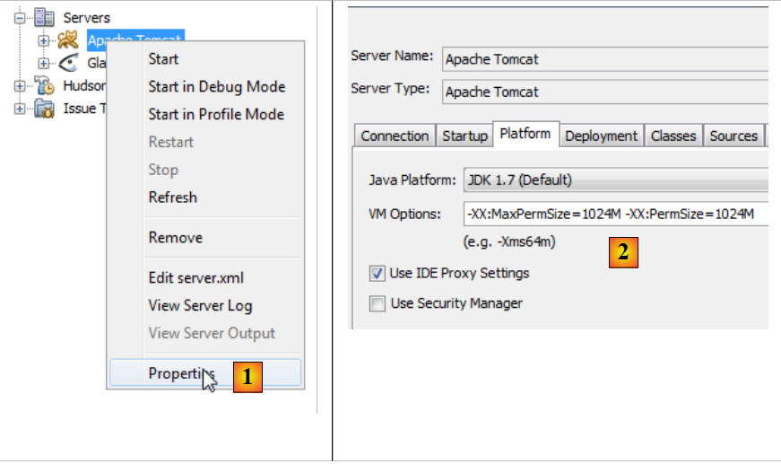 |
- In [1], go to the Tomcat server properties,
- in [2], in the [Platform] tab, set the value for the memory overflow. Here, we set it to 1 GB because we had a total of 8 GB of memory. You can set it to 512 MB (512 megabytes) with a smaller amount of memory.
Next, place the MySQL JDBC driver in <tomcat>/lib, where <tomcat> is the Tomcat installation directory.
 |
- In [1], in the Tomcat properties, note its installation directory <tomcat>,
- in <tomcat>/lib [2], place a recent MySQL JDBC driver [3].
Next, remove the project’s dependency on the MySQL JDBC driver [4].
 |
Once this is done, test the application. You will find that you can repeatedly load and unload the application. However, the memory leak issues are not resolved; they simply occur later.
4.4. Conclusion
We migrated the JSF/EJB/GlassFish application to a JSF/Spring/Tomcat environment. This was done primarily by copying and pasting between the two projects. This was possible because Spring and EJB3 share many similarities. EJB3 was, in fact, created after Spring proved to be more efficient than EJB2. EJB3 then incorporated the best features of Spring.
4.5. Tests with Eclipse
 |
- In [1], import the three Spring projects,
- in [2], select the JUnit test from the [DAO] layer and run it in [3],
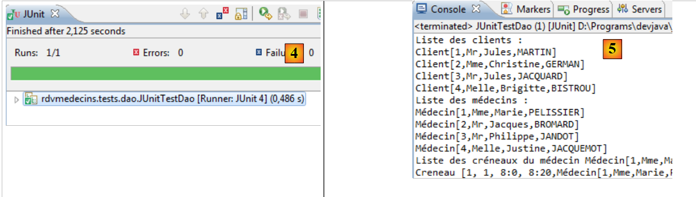 |
 |
- in [4], the test passes,
- in [5], the console logs.
 |
- In [6A] [6B], run the console client for the [business] layer,
- in [7], the resulting console output,
 |
- In [8] [9], we run the web project on a Tomcat 7 server [10],
 |
- in [11], the application's home page is displayed in Eclipse's internal browser.